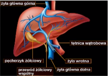

| Nr | Godzina | Pon | Wt | Śr | Czw | Pt |
| 0 | 7:10 - 7:55 | |||||
| 1 | 8:00 - 8:45 | pr.b.dan (135) | pr.apl.int. (120) | biologia (207) | r.informatyka | |
| 2 | 8:50 - 9:35 | pr.b.dan (135) | pr.apl.int. (120) | j.polski (309) | r.informatyka | |
| 3 | 9:45 - 10:30 | matematyka (208) | WF | matematyka (208) | fizyka (204) | |
| 4 | 10:40 - 11:25 | j.polski (309) | geografia (123) | godz.wych. (208) | edb (004) | |
| 5 | 11:35 - 12:20 | j.polski (309) | p.informatyki (304) | j.niemiecki (212) | historia (114) | religia |
| 6 | 12:45 - 13:30 | historia (114) | p.informatyki (006a) | j.angielski (213) | pr.str.int. (311) | WF |
| 7 | 13:35 - 14:20 | pr.apl.int. (120) | matematyka (208) | chemia (207) | pr.str.int. (311) | WF |
| 8 | 14:25 - 15:10 | pr.apl.int. (120) | j.niemiecki (212) | pr.b.dan (135) | plastyka (303) | |
| 9 | 15:15 - 16:00 | j.angielski (213) | religia |
| Nauczyciel | Przedmiot |
| A.Zelent | Matematyka |
| G.Koloch | Bazy Danych |
| M.Capiński | Informatyka |
| P.Nierodka | Apl.Intern. |
| A.Warda | W-F |
| B.Pasella | Angielski |
| A.Konieczny | Podst.Inf. |
| M.Pawliczek | J.Niemiecki |
| I.Snopek | Plastyka |
| E.Szyndlar | Biologia |
| J.Waleczko | Geografia |
| K.Pietrzyk | Str.Int. |
| P.Wilk | edb |
| B.Krogulec | Fizyka |
| A.Stobiecka | Chemia |
| H.Kobielska | Historia |
Jaś miał kiedyś 39oC gorączki i myślał, że C2H4OH mu pomoże.
Niestety był w błędzie.
Zaczął więc studiować książki medyczne min.: Leksykon zdrowia.
Nie znalazł odpowiedzi na swoje pytanie ale dowiedział się jak wygląda wątroba:

Jest tysiące chorób, ale tylko jedno zdrowie.